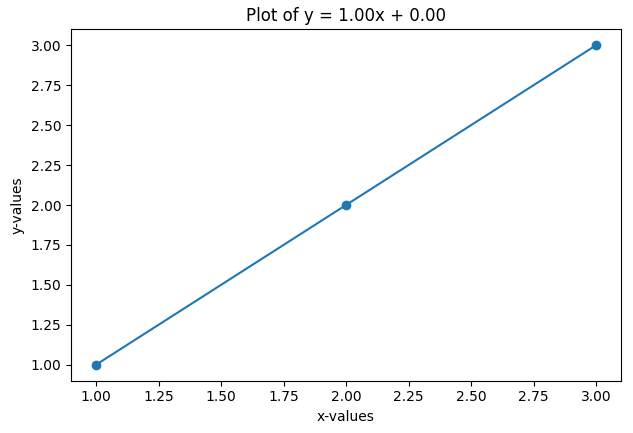
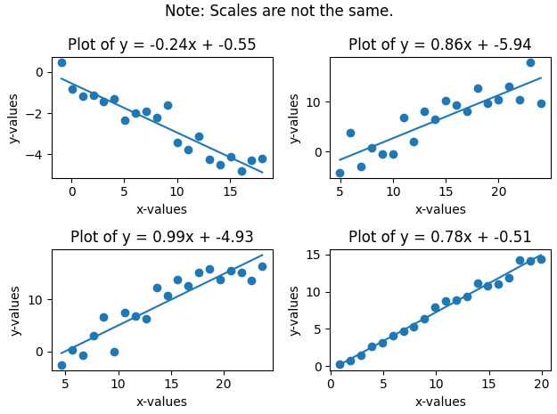

regpy is a python library meant to make the prototyping process for fitting regression data as painless as possible. You can plot any regression line in as little as four lines of Python.
This will plot this graph (regpy uses matplotlib in the background):

The minimal effort of using this library means it is a perfect choice for rapid development over small datasets, or even for use in educational settings. Plotting multiple graphs is also possible, and neat formatting is handled entirely for you. The following script:
May produce the following graphs:

This library currently only supports creating linear regressions, but it is a WIP, and in the future may be expanded to encompass multiple types of regression.
Read the docs.